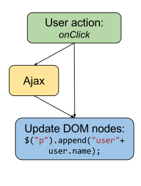
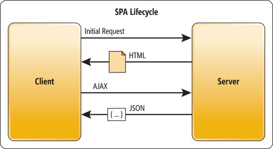
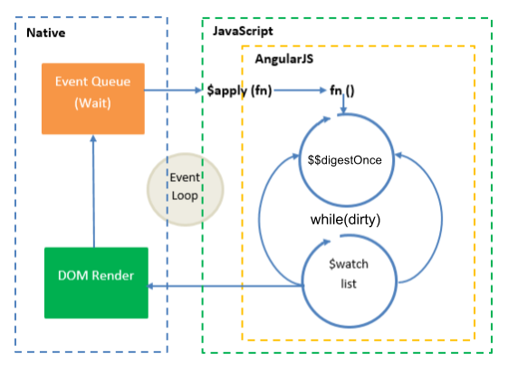
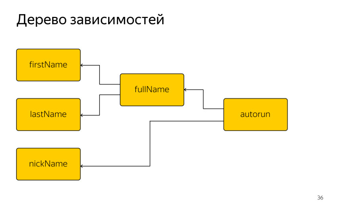
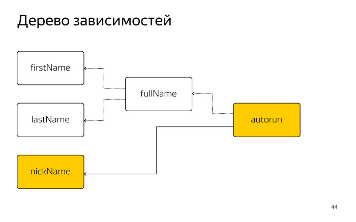
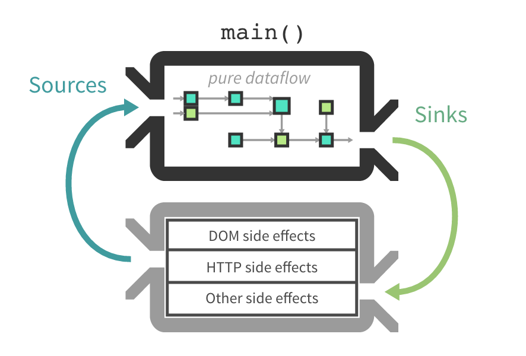
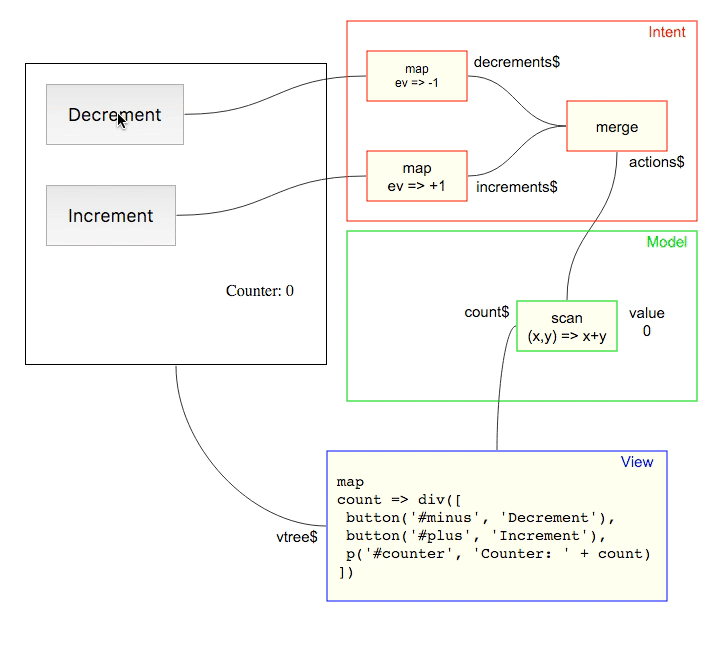

Frontend State management
(Redux)
Created by Nik Nikitenok / @NNikitenok
Types of Frontend generation
- Server rendering
- Incremental rendering
- Single page application(SPA)
Server rendering
Generatin HTML by server template engine.
System elements
All template processing systems consist of at least these primary elements:
- an associated data model
- one or more source templates
- a processor or template engine
- generated output in the form of result documents.
Data to view flow
Data stored on the server- Server prepares the
data for display - Template engine create view by
date
Languages
- PHP (by language)
- Java (JSP, Velocity, FreeMarker)
- JS (Handlebars, Pug/Jade)
- C# (Razor, DotLiquid, NHaml)
PUG example
template.pug
p #{name}'s Pug source code!
Js
const pug = require('pug');
console.log(pug.renderFile('template.pug', {
name: DB.getUserName()
}));
Result
Timothy's Pug source code!
JSP example
Counting to three:
<% for (int i=1; i<4; i++) { %>
This number is <%= i %>.
<% } %>
OK.
Profits
- Work withut JS
- Search robots
Problems
- Large network trafic
- Static content
- Bad user experience
Incremental rendering
Manual update DOM by changing data (or user action).
Data to view flow
Data stored in closures, glogal scope or in html attributes- Event triger update function
- Function make point update via DOM manipulating
ways
- Valina JS
- jQuery
- Backbone
- Other lib helping work with DOM
Profits
- Adding interaction on page
- Good for small/simple applicalions
Problems
- Hard to scale
SPA
Single-Page Applications (SPAs) are Web apps that load a single HTML page and dynamically update that page as the user interacts with the app.
MVC

frameworks
- Angular(AngularJs)
- Vue.js
- Ember
- React (bud with adding libraries)
Data to view flow
Data stored in Model($scope, store and etc.)Data updated via special mhetods-
Changing model triger rerender needed parts
- By data binding
- Rerender all to VDOM and update needed parts
Overview and compare libraries
- Backbone.Model
- AngularJs $scope
-
VDOM librares
- CycleJs
- MobX
- Redux
Backbone.Model
Event based data management
var Book = Backbone.Model.extend(options);
var book = new Book();
book.on({
"change:title": titleView.update,
"change:author": authorPane.update,
"destroy": bookView.remove
});
AngularJs $scope
Two-way databinding
Scope is an object that refers to the application model. It is an execution context for expressions. Scopes can watch expressions and propagate events.
$watch
Scope.prototype.$watch = function(watchFn, listenerFn) {
var watcher = {
watchFn: watchFn,
listenerFn: listenerFn
};
this.$$watchers.push(watcher);
};
$$digestOnce(helper)
Scope.prototype.$$digestOnce = function() {
var self = this;
var dirty;
for(var watch of this.$$watchers) {
var newValue = watch.watchFn(self);
var oldValue = watch.last;
if (newValue !== oldValue) {
watch.listenerFn(newValue, oldValue, self);
dirty = true;
}
watch.last = newValue;
}
return dirty;
};
$digest
Scope.prototype.$digest = function() {
var dirty;
do {
dirty = this.$$digestOnce();
} while (dirty);
};
$apply
Scope.prototype.$apply = function(fn) {
fn()
this.$digest()
};
digest lifecycle
Template
Hello {{yourName}}!
AngularJS atomatic create watcher for update html by changing $scope.yourName
MobX
Based on JS Observable
@obsevable
calss Person {
@obsevable firstNmae = 'Vasya';
@obsevable lastName = 'Pupkin';
@obsevable nickname;
}
@computed
calss Person {
//...
@computed get fullName() {
retrun this.firstNmae + ' ' + this.lastName
}
}
@action
calss Person {
//...
@action setNickName(nickName) {
retrun this.nickName = nickName
}
}
autorun
autorun(function (){
console.log(person.nickName || person.fullName)
})
Dependencies tree
autorun
autorun(function (){
console.log(person.nickName || person.fullName)
})
change
person.setNickName('Big russian boss')
autorun(function (){
console.log(person.nickName || person.fullName)
})
Obsevable fields
- person.nickName
Ignored fields
- person.fullName
- person.firstName
- person.lastName
Dependencies tree
profits
- Minimum bolerplate
- Auto subscribe in runtime
- Performace from the Box
CycleJs
Framework based on RxJS strems
CycleJs app
import { run } from '@cycle/run';
run(main, {
DOM: makeDOMDriver('#main')
});
create data stream
import xs from 'xstream';
function main(sources) {
const action$ = xs.merge(
sources.DOM.select('.decrement')
.events('click').map(ev => -1),
sources.DOM.select('.increment')
.events('click').map(ev => +1)
);
const count$ = action$.fold((acc, x) => acc + x, 0);
// ...
}
create dom stream
import { div, button, p } from '@cycle/dom';
function main(sources) {
// ...
const vdom$ = count$.map(count =>
div([
button('#minus', 'Decrement'),
button('#plus', 'Increment'),
p('Counter: ' + count)
])
);
return {
DOM: vdom$,
};
}
schema
Redux

Principles
- Single source of truth
- State is read-only
- Changes are made with pure functions
action
- Action is simpe Javavasctiopt Object.
- Action must have property
type - Action data placed in
payload
var increment = {
type: 'INCREMENT',
}
var add = val => {
return {
type: 'ADD',
payload: 6
}
}
reducer
- Reducer is pure function
- Reducer can be combined
var reducer = (state = 0, action) => {
switch (action.type) {
case 'INCREMENT':
return state + 1
case 'ADD':
return state - action.payload
default:
return state
}
}
example
const store = createStore(reducer)
console.log(store.getState()) // 0
store.subscribe(console.log(store.getState()))
store.dispatch(increment) // 1
store.dispatch(add(6)) // 7
Flow